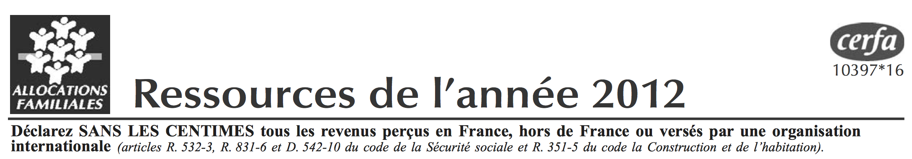
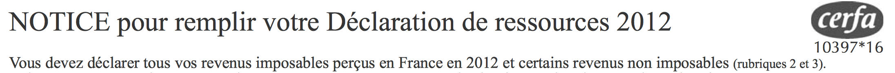
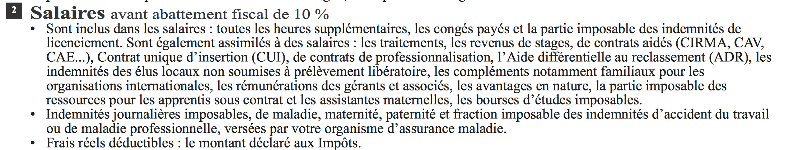
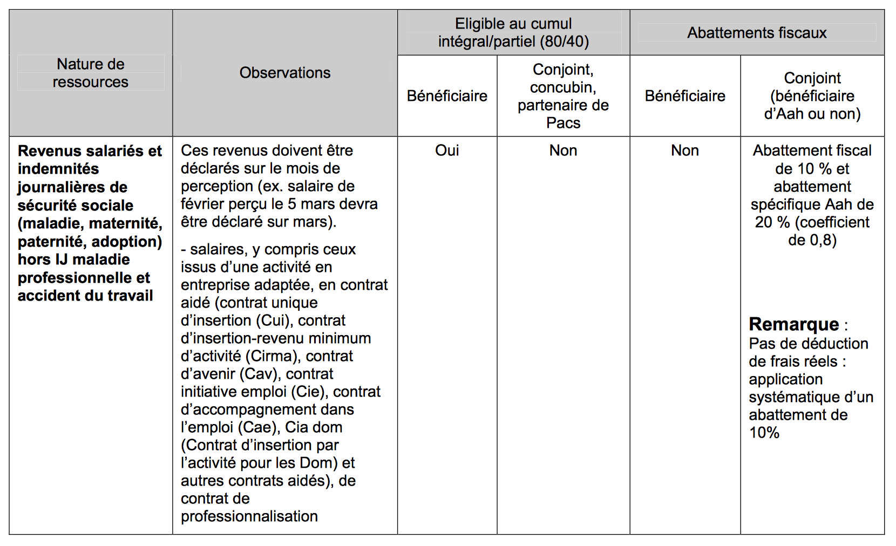
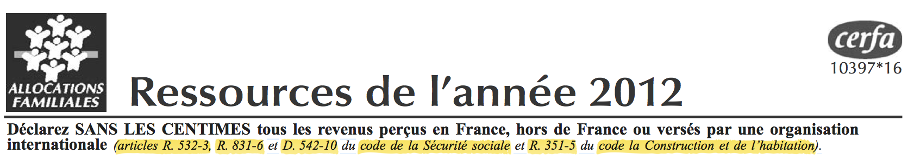
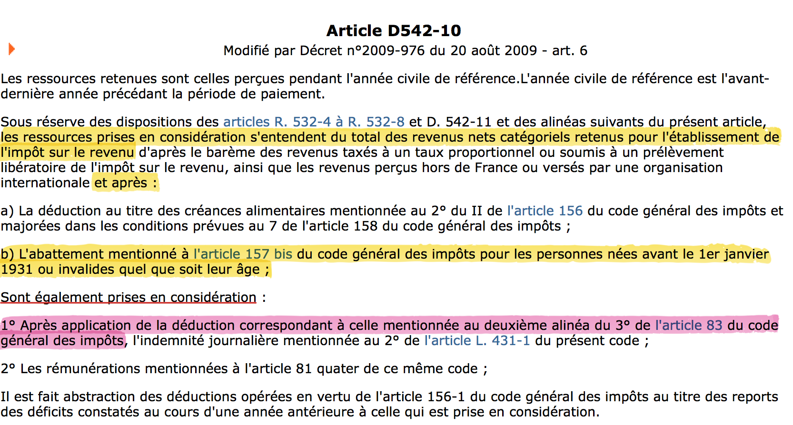
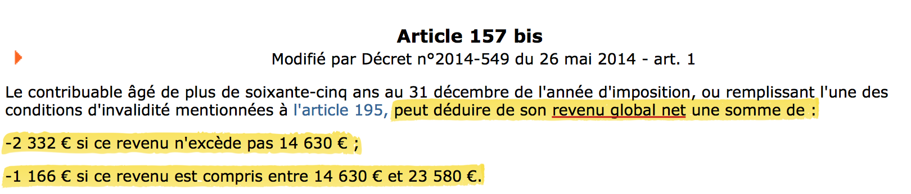
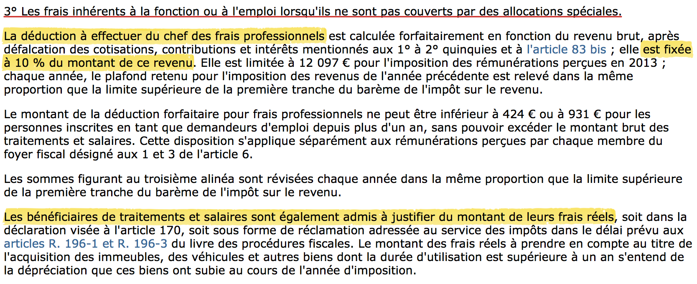
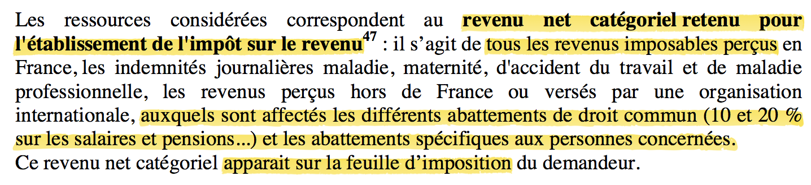
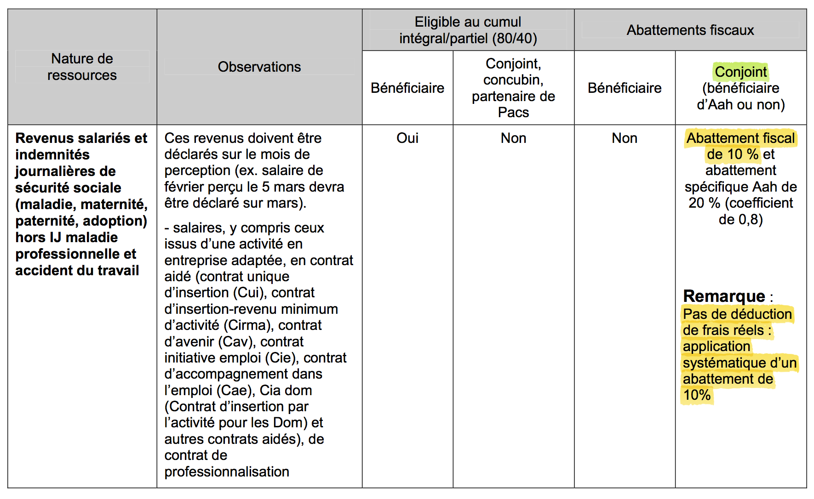

Pour pouvoir prétendre aux aides sociales délivrées par la Caisse d’Allocations Familiales (dont fait partie l’AAH = Allocation Adulte Handicapée), vous devez déclarer vos ressources de l’année N-2 (ou encore trimestriellement) auprès de celle-ci.
Voyons ce que nous dit ce formulaire :

–> D’accord. Quels revenus ?
Un peu plus bas on trouve en case n°2 à remplir :

–> Très bien. Mais cela ne nous renseigne pas sur la nature des salaires à déclarer : brut ? net ? net global ? net imposable ?
Il faut dire que les définitions adoptées varient d’un organisme à l’autre, et qu’il est parfois difficile de savoir de quoi l’on parle exactement, la preuve :

–> OK. Mais s’agit-il des revenus imposables figurant sur notre fiche de paie (cf. Comprendre son bulletin de paie) ou ceux considérés par l’administration fiscale lors du calcul de l’impôt (cf. Quels impôts pour les personnes handicapées ?)
Un peu plus bas, une remarque nous met la puce à l’oreille :

Puisqu’il s’agirait des salaires avant l’abattement fiscal de 10% (pour les frais professionnels), on peut en déduire que la CAF demande que l’on déclare les salaires net imposables figurant sur la fiche de paie.
–> OK. Mais est-ce que par la suite, la CAF, à partir de ce montant déclaré, va tout de même appliquer cet abattement de 10% dans son calcul de l’AAH ? Ou déduire le cas échéant les frais réels (puisqu’ils demandent de les renseigner) ?
La réponse est : NON. Pas d’abattement de 10% ni de déductions de frais réels !
En effet dans la circulaire n°2010-013, datant du 17 novembre 2010, qui intègre les nouvelles dispositions applicables depuis le 1er janvier 2011 et toujours en vigueur, on y trouve le tableau récapitulatif suivant (page 43 - AAH 36) :

On peut effectivement y lire qu’aucun abattement fiscal n’est appliqué pour le bénéficiaire.
–> Aah.. Mais que dit le droit dans tout ça ?
Bonne question, jetons un oeil aux textes de loi dont fait référence la CAF :

Article R.352-3, R.831-6, D.542-10 du code la sécurité sociale, et l’article R.351-5 du code de l’habitat et de la construction. En fait ces quatre textes de lois, comme vous pouvez le remarquer, sont pratiquement du copier coller l’un de l’autre.
On va donc s’intéresser au plus complet d’entre eux, à savoir l’article D.542-10 du code de la sécurité sociale.
–> Que nous dit cet article ?
Plusieurs choses. Il est écrit :
“les ressources prises en considération s’entendent du total des revenus nets catégoriels retenus pour l’établissement de l’impôt sur le revenu”
D’après plusieurs sources123, le revenu net catégoriel concernant la catégorie “traitements et salaires” obéissant à des règles spécifiques, est calculé en déduisant les frais professionnels ou réels donc en appliquant les 10% d’abattement ! C’est d’ailleurs bien ce montant après déduction qui est retenu pour le calcul des impôts (cf. Quels impôts pour les personnes handicapées ?)
1 Revenu catégoriel d’après legifiscal
2 Revenu catégoriel d’après legifrance
3 Revenu net catégoriel d’après un livre de Comptabilité
Par ailleurs il est même ajouté :
“les ressources prises en considération s’entendent du total des revenus nets catégoriels retenus pour l’établissement de l’impôt sur le revenu […] et après l’abattement mentionné à l’article 157 bis du code général des impôts pour les personnes nées avant le 1er janvier 1931 ou invalides quel que soit leur âge”
Cet article stipule de plus que pour des revenus n’excédant pas 14 630 € un abattement de 2332 € est appliqué, et pour des revenus compris entre 14 630 € et 23 580 € l’abattement est de 1166 €.

Or la CAF n’applique pas cet abattement, si on attend du bénéficiaire qu’il déduise lui-même cet abattement dans la déclaration des ressources, alors il serait recommandé de le renseigner dans la “Notice de déclaration de ressources” non ? Nul n’est censé ignorer la loi d’accord, mais même les conseillers de la CAF ne doivent pas avoir connaissance de cet abattement pourtant fort important dans le calcul des impôts (cf. Quels impôts pour les personnes handicapées ?).
Notons que cet abattement s’applique sur le revenu net global4, dont la définition n’est à mon sens pas très claire, mais néanmoins ce qui est sur, c’est que dans le calcul des impôts, cet abattement apparait après avoir déduit les 10% de frais professionnels (cf. Quels impôts pour les personnes handicapées ?)
4 Article 1A du code général des impôts - lien

[EDIT 2015] : je suis tombé récemment sur l’article R.821-4 du code de la sécurité sociale qui contredit la prise en compte des abattements spécial invalidité, en tout cas sur les revenus d’activités professionnelles.
–> Et pourquoi avoir surligner en rose le passage en dessous ?
Je vois que vous suivez… 😀
Parce que ce qui me fait douter est que dans cet alinéa ils précisent que l’indemnité journalière est pris en considération après abattement prévu par l’article 83 du code général des impôts, qui est précisément l’abattement des 10% de frais professionnels ou réels.

Donc si précédemment ils ne précisaient rien, c’est peut-être que cet abattement n’aurait pas lieu d’être… et que le revenu global net serait constitué ni plus ni moins que des salaires net imposables figurant sur la fiche de paie sans abattement des 10%…
Mais alors comment expliquer que la définition des revenus net catégoriels à déclarer comprend visiblement l’abattement des 10%, et que de surcroît l’abattement spécial invalidité s’applique généralement après déduction des 10% ?!
–> Qu’en pense l’APF ?
De leur côté il semblerait qu’ils revendiquent bel et bien la possibilité de déduire les frais professionnels de 10% ou frais réels5.
5 Notes juridiques de l’APF de septembre 2013 (p.11) - lien

Sur un autre site de l’APF ils abordent le problème des frais professionnels, et plus particulièrement des frais réels. Je cite :
Dans sa circulaire n° 2010-013 du 17 novembre 2010, la Caisse nationale d’allocations familiales affirme effectivement, s’agissant de la déclaration trimestrielle de ressources pour les allocataires percevant des revenus d’activité professionnelle : « Pas de déduction de frais réels : application systématique d’un abattement de 10% ». Toutefois après une étude approfondie des textes en vigueur par le service juridique de l’APF, il s’avère que cette affirmation ne repose sur aucune base légale ou réglementaire mais sur les difficultés techniques qu’impliquerait la déduction des frais réels.
Il semblerait pour autant qu’il y ait une confusion de leur part… En effet sur cette page ils citent la circulaire et en particulier le tableau dont j’ai déjà parlé plus haut, or la remarque “Pas de déduction de frais réels : application systématique d’un abattement de 10%” concerne uniquement la colonne du conjoint !

Pour conclure, je pense qu’il serait légal de justifier auprès de la CAF la prise en compte de l’abattement des 10% de frais professionnels en s’appuyant sur la définition des revenus catégoriels net qui l’englobe effectivement. A ceci s’ajouterait la possibilité de faire valoir l’abattement spécial lié à l’invalidité.
En attendant confirmation, la question reste donc ouverte, et mérite quelques éclaircissements. Si vous avez des infos qui viendraient compléter ou réfuter mon analyse, n’hésitez pas à laisser un commentaire avec si possible textes officiels à l’appui 😉
Affaire à suivre !